Despite recent advances in general-purpose robotic manipulation, real-world multi-object clutter remains challenging to handle for today's prevalent approaches. The problem scales in complexity due to more objects and collisions, harder dynamics, distractors, and task ambiguity. Bridging this gap to real-world deployment requires effective scene abstractions, yet current methods rely heavily on manually engineered representations — an approach that does not scale.
We instead propose to automatically generate scene-specific, task-specific, adaptive abstractions, without manual intervention. LLM-guided Environment Simplification (LENS) produces a de-cluttered abstracted scene representation by merging (e.g., stacked objects) or pruning (e.g., distant objects) scene entities in a closed loop in response to task progress. In our experiments, we show that LENS improves classical planning, model-based control, and a vision-language-action model across a diverse set of highly cluttered manipulation scenes.
LENS is a general, task-agnostic framework for constructing task-focused, dynamic scene abstractions using vision-language models and iterative task feedback. Given a natural language task description and a scene description, a VLM (GPT-4.1 mini) is prompted to output: (i) a minimal set of task-relevant objects critical for task completion, and (ii) groups of objects that may be merged into a single composite entity.
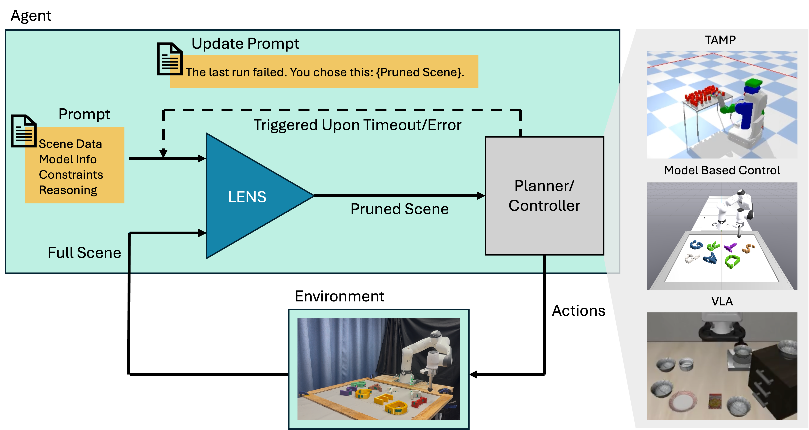
Figure 2. System overview of LENS. Given a task description via the full scene and prompt information, LENS (blue) prunes and merges objects to produce an abstracted scene, which is passed to the planner or controller (grey). When triggered by failure or timeout, LENS revises its scene pruning. This approach generalizes to TAMP, model-based controllers, and VLAs.
Objects excluded from the task-relevant set are omitted from the planner/controller's world model — eliminating unnecessary decision variables (TAMP), contact constraints (MPC), and visual distractors (VLA).
Groups of objects that are functionally or dynamically coupled are replaced by a single composite entity whose collision geometry is the union of its members, reducing rigid-body count and contact interactions.
When a downstream planner finds the abstracted scene infeasible or a controller fails, that feedback is passed back to the LLM/VLM — which iteratively corrects the abstraction, restoring over-pruned objects or refining merges. This loop is triggered by timeouts or error codes from downstream systems.
We evaluate LENS across three planning and control paradigms on cluttered tabletop manipulation tasks, comparing against baselines operating on unfiltered scenes.
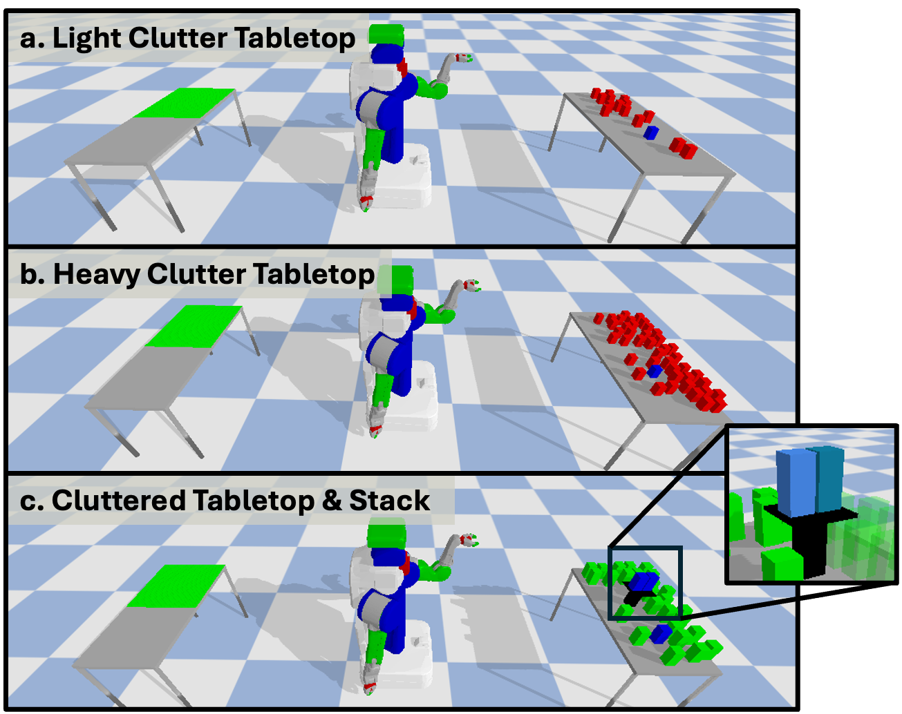
Fig. 3. Three TAMP environments of increasing complexity: (a) light-clutter tabletop, (b) heavy-clutter tabletop, (c) clutter + stack. The stack is a tray (black) with two goal objects (blue).
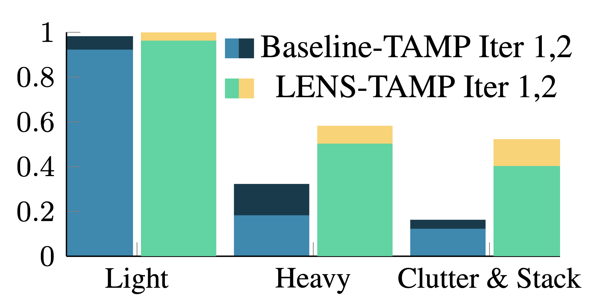
Fig. 4. Baseline-TAMP vs. LENS-TAMP success rates (top) and runtimes (bottom). LENS achieves higher success and lower runtimes on the two more complex tasks. Iteration 1 and 2 are shown stacked.
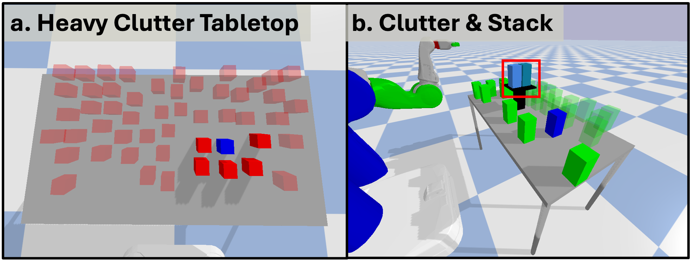
Fig. 5. Examples of scene pruning for (a) Heavy Clutter and (b) Clutter & Stack. Semi-transparent objects are pruned; the stack is merged into a single composite object.
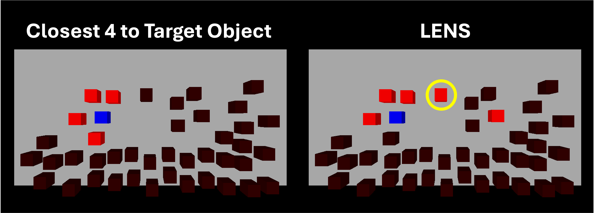
Fig. 6. Example TAMP scene where a distance-based baseline fails. The set of nearest objects to the goal (highlighted) fails to include a critical blocking object further away, which must be removed to enable a successful approach to the target. LENS identifies the blocker as task-relevant.
TAMP — Heavy Clutter
TAMP — Clutter & Stack
Qualitative results showing LENS pruning and planning in heavy-clutter and clutter+stack environments.
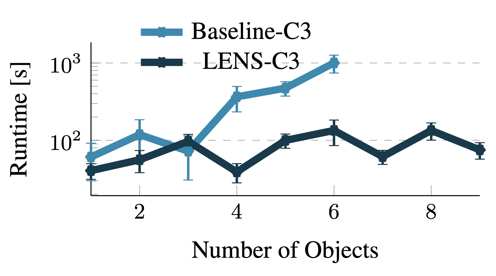
Fig. 7. Execution time vs. object count (log scale). Baseline C3+ degrades sharply — exceeding 1600s at 7 objects. LENS stays within ~30–125s across all counts.
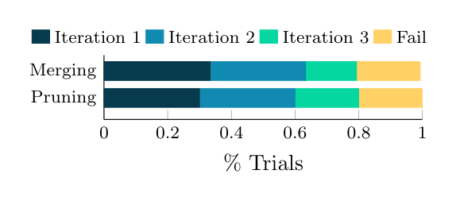
Fig. 8. Hardware task outcomes for pruning and merging experiments, broken down by iteration. Success distributed across iterations highlights the value of iterative re-querying.
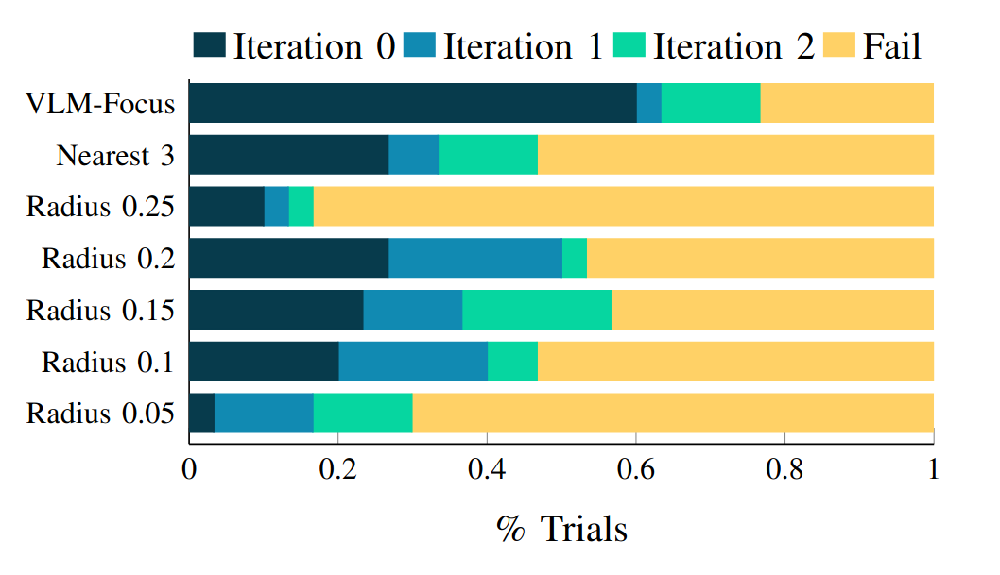
Fig. 9. LENS vs. nearest-k and radius-based geometric pruning baselines (n=30). LENS captures task-relevant objects regardless of proximity, outperforming heuristics.
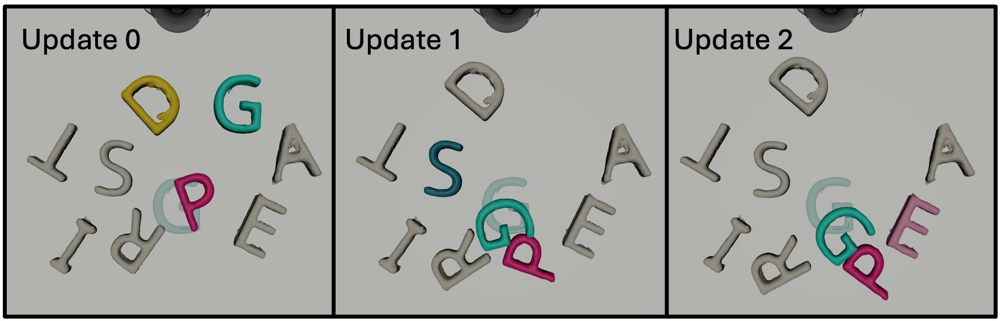
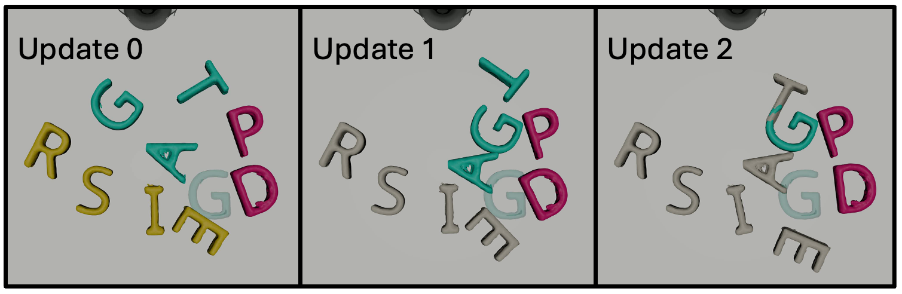
Fig. 10. Three iterations of the pruned (top) and merged (bottom) object sets. Pruned objects shown in gray; successive iterations adapt to the evolving environment state. Merged groups (uniform colors) become more focused over iterations.
C3+ — Pruning on Hardware
C3+ — Merging on Hardware
Real robot planar pushing experiments demonstrating pruning and merging strategies across multiple feedback iterations.
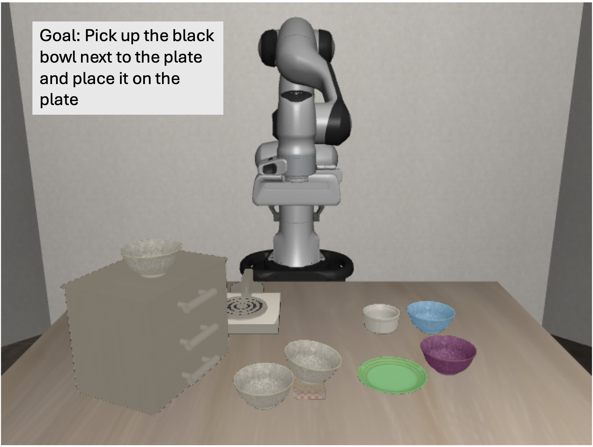
Fig. 11. VLA pruning visualization. Grey objects are pruned; colored mask overlays are task-relevant. Goal (green) and target (purple) are selected; a second distractor goal is selected due to prompt ambiguity.
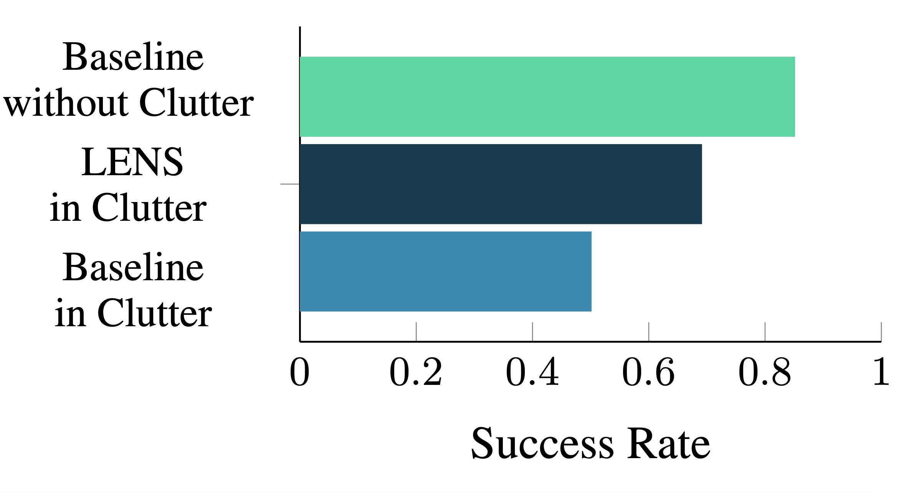
Fig. 12. Task success rates on LIBERO-Spatial (100 episodes, 10 tasks). Clutter drops baseline from 0.85 → 0.50; LENS recovers to 0.70.
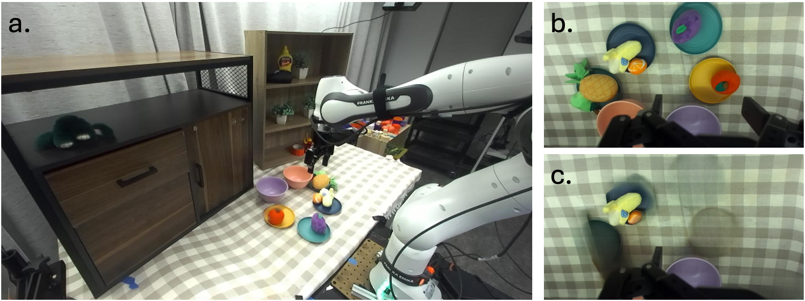
Fig. 13. Real hardware VLA experiment. LENS applied on hand images (b) without simulator bounding boxes. GroundingDINO + SAM + LaMa segment and inpaint task-irrelevant objects (c).
Table I — Hardware VLA (π₀.₅), n=10 per fruit
| Method | Task | 🍍 | 🍐 | 🍌 | 🍎 |
|---|---|---|---|---|---|
| VLA (full scene) | Pick Up | 0.8 | 0.7 | 0.0 | 0.0 |
| VLA (full scene) | Place | 0.2 | 0.0 | 0.0 | 0.0 |
| + LENS | Pick Up | 1.0 | 0.7 | 0.7 | 0.7 |
| + LENS | Place | 0.5 | 0.3 | 0.3 | 0.7 |
VLA results in LIBERO-Spatial simulation. Clutter drops baseline success from 0.85 to 0.50; LENS recovers to 0.70 by inpainting task-irrelevant objects before querying the policy.
Front Camera
Hand Camera
Hand Camera — Inpainted
Real hardware fruit pick-and-place using the full open-vocabulary pipeline (GroundingDINO + SAM + LaMa). The inpainted hand-camera view (right) shows distractors removed before querying the π₀.₅ policy.
@misc{liao2026lensllmguidedenvironmentsimplification, title={LENS: LLM-guided Environment Simplification for Planning and Control in Clutter}, author={Aileen Liao and Rachel Holladay and Dinesh Jayaraman and Michael Posa}, year={2026}, eprint={2607.19633}, archivePrefix={arXiv}, primaryClass={cs.RO}, url={https://arxiv.org/abs/2607.19633}, }